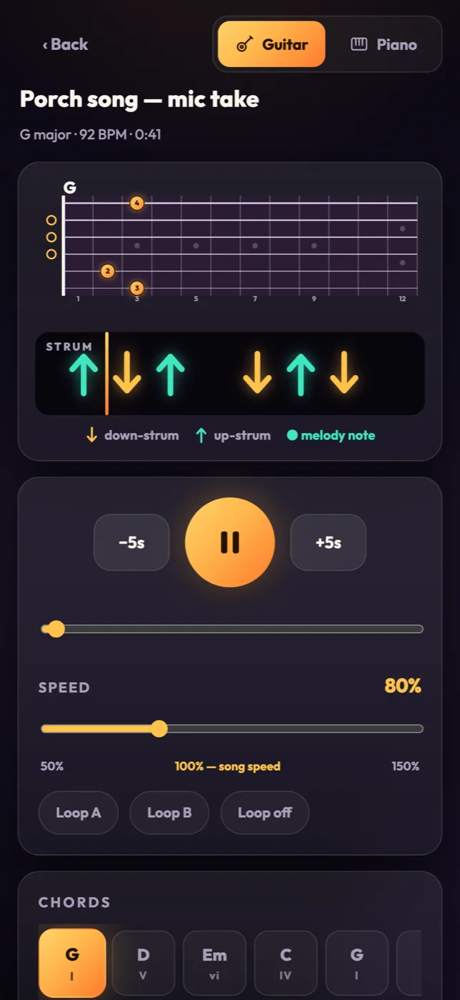
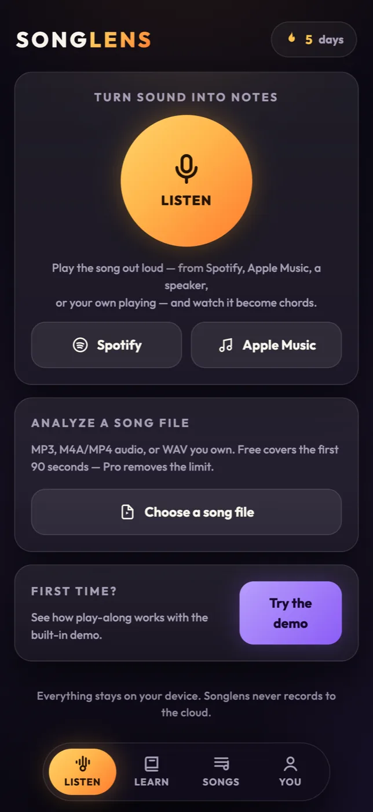
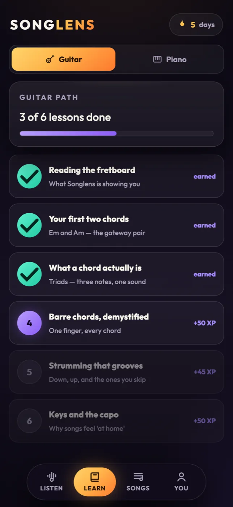

Play it out loud
Open Spotify or Apple Music, play from a speaker, or play it yourself. You can also bring an MP3, M4A or WAV you own.
SONGLENS
Play any song out loud and Songlens turns it into notes on your instrument: chords on the fretboard, notes on the keys, and hits on the drum lanes. Then slow it down, loop the hard bar and play along.
In development · Coming to iPhone
Built for obscure artists, live versions and your friend’s original song. If you can hear it, you can learn it.
Open Spotify or Apple Music, play from a speaker, or play it yourself. You can also bring an MP3, M4A or WAV you own.
The microphone hears the song and shows a live chord readout. When you stop, the whole take is transcribed on your phone.
Finger dots, barre bars and strum arrows, with the tempo slowed down and the tricky bar on a loop.

Switch instruments at any time, even partway through a song.

Short lesson paths take you from your first two chords to barre chords and strumming. The tempo trainer listens while you play and only speeds up after a clean pass. You can transpose, simplify, fix a chord by hand, and keep a daily streak going.
Songlens listens and analyses entirely on your device. There’s no account, no server and no uploads, and it never records to the cloud. Streaming services don’t share their audio with any app, so Songlens simply listens to the song as it plays out loud.
The free version is genuinely useful: three saved songs, microphone listening, lessons and every practice tool, plus the first 90 seconds of any file. An optional Songlens Pro upgrade removes the limits and adds full-length file analysis and MIDI export. Prices and any trial are shown in the app before you buy.
Songlens is in development and isn’t available yet. The download link will appear here at launch. Screens are from a development build and may change.